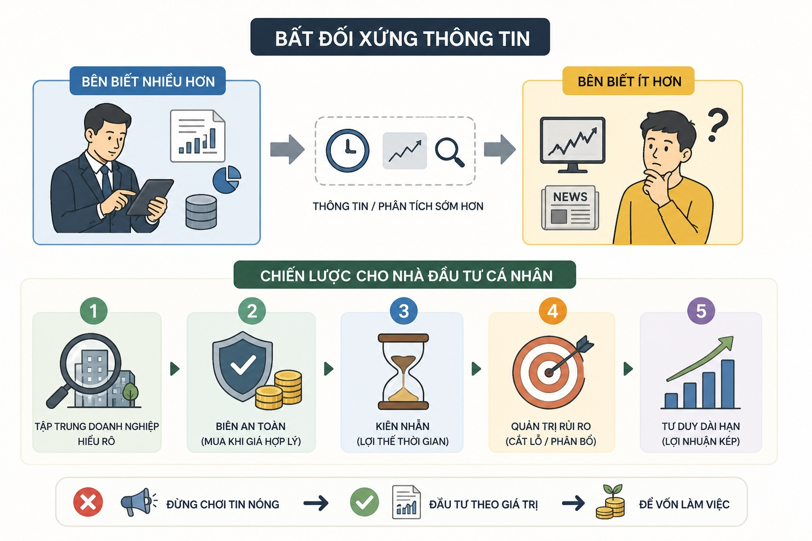

Bất đối xứng thông tin - chiến lược đầu tư chứng khoán

Bất đối xứng thông tin là tình huống trong đó một bên biết nhiều hơn hoặc biết sớm hơn bên còn lại.
Trong chứng khoán, điều đó xảy ra khá thường:
• ban lãnh đạo hiểu hoạt động doanh nghiệp sâu hơn thị trường
• tổ chức chuyên nghiệp có hệ thống phân tích mạnh hơn nhà đầu tư cá nhân
• người phản ứng nhanh hơn có thể xử lý tin tức sớm hơn
Ví dụ: trước khi báo cáo tài chính được thị trường “tiêu hóa”, có người đã hiểu biên lợi nhuận đang xấu đi, còn số đông chỉ thấy giá cổ phiếu “đang ổn”.
Điều quan trọng với nhà đầu tư cá nhân
Bạn thường khó thắng bằng thông tin nhanh hơn.
Trong thực tế, bạn đang cạnh tranh với:
• Tự doanh công ty chứng khoán: SSI, VPS, Vietcap...
• Quỹ, desk giao dịch, hệ thống phân tích
Nếu chơi trò “ai biết tin trước”, lợi thế thường không nằm ở phía cá nhân.
Chiến lược rút ra khi đầu tư chứng khoán
1. Đừng xây chiến lược dựa vào “tin nóng”
Nếu một tin đã tới được bạn, nhiều khả năng nó đã được phản ánh phần nào vào giá.
Thứ cần hỏi không phải:
“Tin này tốt hay xấu?”
Mà là:
“Thị trường đã định giá tin này tới mức nào rồi?”
2. Chơi ở nơi bất đối xứng nhỏ hơn
Nhà đầu tư cá nhân có thể có lợi thế ở:
• kiên nhẫn hơn tổ chức
• không bị áp lực hiệu suất quý
• có thể chờ lâu cho thesis đúng
Nói cách khác: đừng cố nhanh hơn, hãy cố đúng hơn trong khung thời gian dài hơn.
3. Chỉ mua thứ bạn hiểu cơ chế tạo tiền
Hãy hiểu doanh nghiệp kiếm tiền bằng cách nào:
• doanh thu đến từ đâu
• biên lợi nhuận do cái gì quyết định
• rủi ro chính nằm ở đâu
Nếu không hiểu cơ chế lợi nhuận, bạn đang đầu tư vào giá, không phải vào doanh nghiệp.
4. Dùng “vùng an toàn” thay vì cố dự đoán chính xác
Khái niệm này gắn mạnh với Benjamin Graham.
Không cần biết chính xác tương lai.
Cần biết rằng giá mua đủ thấp để sai một phần vẫn còn biên an toàn.
Một nguyên tắc thực dụng
Khi thấy một cổ phiếu hấp dẫn, thay vì hỏi:
• “Nó có tăng không?”
Hỏi ba câu này:
Mình biết điều gì mà thị trường có thể đang bỏ qua?
Nếu mình sai, mình sai ở giả định nào?
Nếu không mua hôm nay, 6 tháng nữa luận điểm còn đúng không?
Ý cốt lõi
Trong chứng khoán, bất đối xứng thông tin không phải lúc nào cũng thắng bằng việc có thêm thông tin.
Nhiều khi thắng bằng:
lọc nhiễu tốt hơn, kiên nhẫn hơn, và trả giá hợp lý hơn.